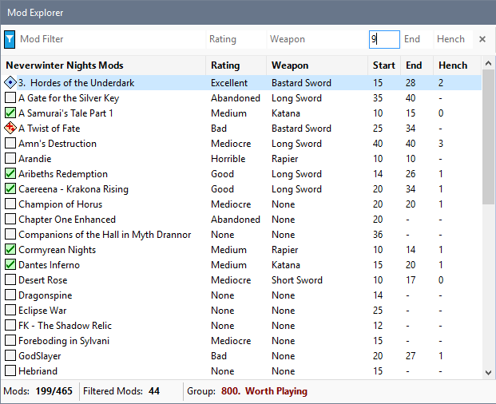
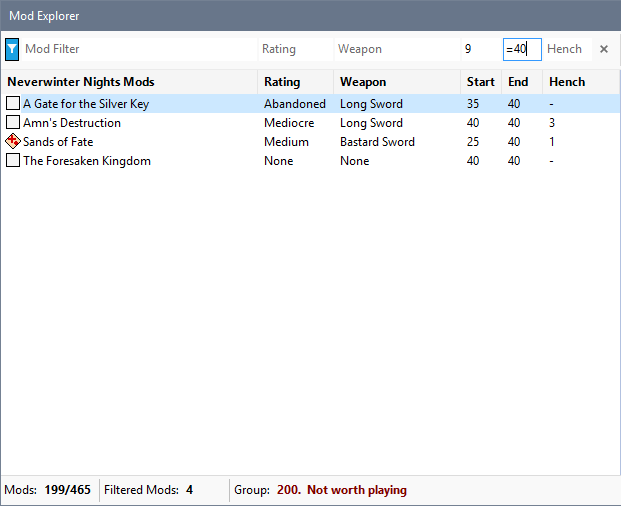
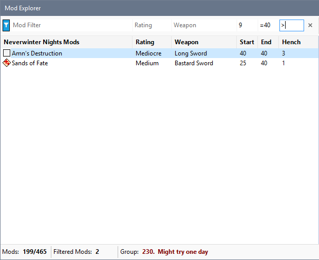

Click in the Start, End or Henchman filter box and type the numeric value by which you want to filter Mods. You can prefix the number with one of these symbols to define how your criteria will be compared.
|
Symbol |
Affect |
|
None |
Greater than (>) is assumed. |
|
Greater than (>) |
Include Mods having a property value higher than the one specified in the filter box. |
|
Equals (=) |
Include Mods having a property value equal to the one specified in the filter box. |
|
Less than (<) |
Include Mods having a property value less than the one specified in the filter box. |
Specify 9 in the Start filter box to display all Mods where the required starting level is 10 or more.

Specify "=40" in the End filter box to display Mods where the End level is 40.

Specify the greater than (>) symbol in the Henchman filter box to display mods where the maximum number of henchman allowed is greater than none.

Filter by Start, End or Henchman